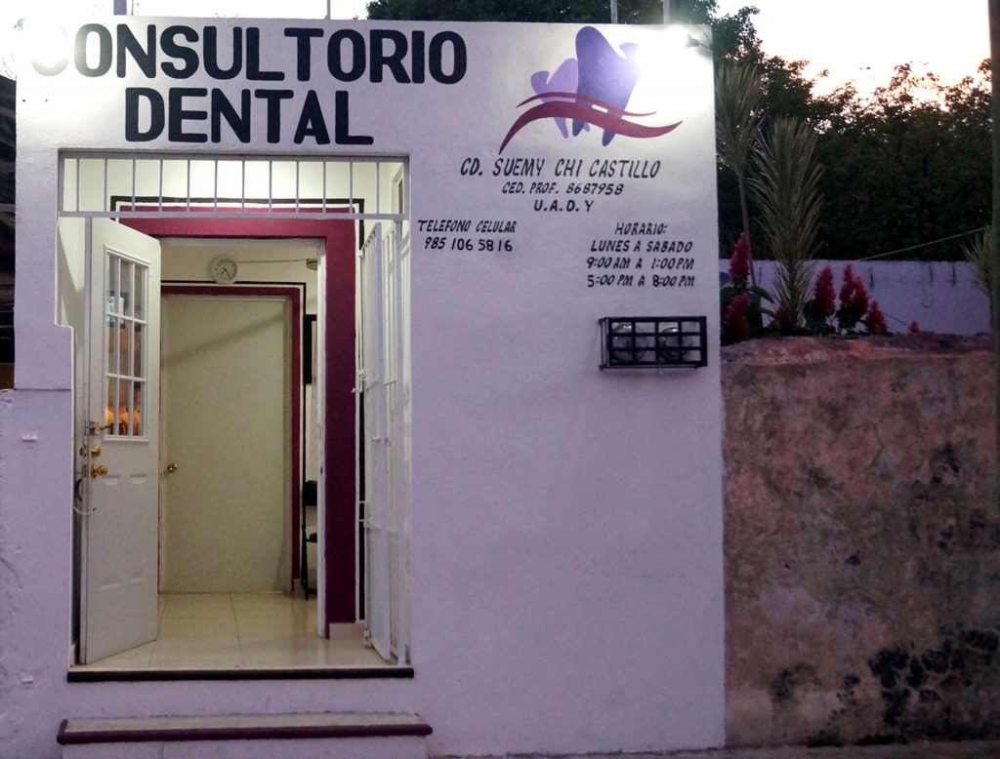

Consultorio Dental Familiar
"CD.Suemy Dolores Chi Castillo"
En el consultorio de la CD.Suemy Chi Castillo
Contamos con tratamientos especializados: Ortodoncia, Endodoncia. Periodoncia (enfermedad de las encías), Odontología Infantil, Odontología general: Profilaxis (Limpieza dental con ultrasonido) Resinas estéticas Coronas de porcelana Prótesis removibles Extracciones Cirugía bucal Blanqueamiento dental Odontología preventiva y más
Estamos ubicados en la calle 38 x 35 y 37 Colonia Centro